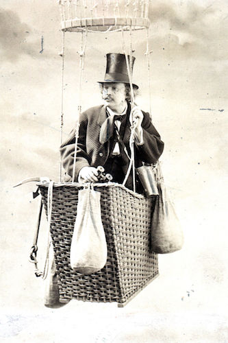

Nadar (Parijs, 6 april 1820 – aldaar, 21 maart 1910), pseudoniem van Gaspard-Félix Tournachon, was een Frans schrijver, tekenaar, fotograaf, journalist en ballonvaarder.
Hij werd beroemd door zijn eerste luchtfoto's die hij maakte vanuit luchtballonnen. Op 26 september 1864 steeg hij, onder het oog van koning Leopold I, vanuit de Kruidtuin te Brussel op. Hier maakte hij gebruik van dranghekken, om de veiligheid van de omstanders te garanderen. Nog steeds spreekt men in België van een nadarafsluiting. De man zelf kon niet lachen met deze benaming en schreef daarover zelfs een brief naar de Belgische koning.